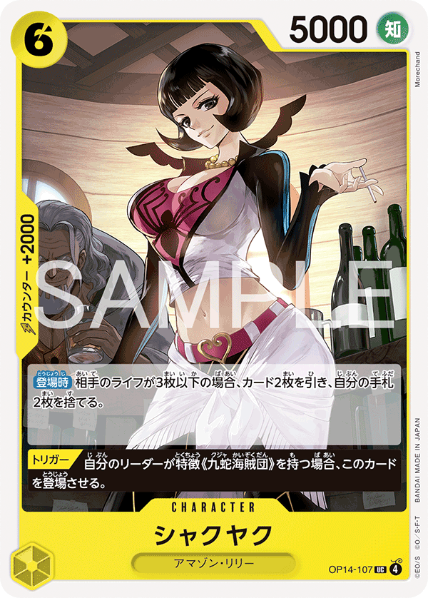

BLACKYELLOW
5000 POWER
LIFE 4
Blackbeard Pirates control
Marshall D. Teach · OP16-080
Teach
Marshall D. Teach (
Marshall D. Teach, Black/Yellow, 5000 power, LIFE 4) is a defensive control deck that taxes the opponent's removal math on their own turn, redirects one attack per turn onto a body of its choosing, and pays for that defense with a deck built almost entirely out of [Trigger] cards — so every card it spends defending was also a card that would have generated value off a flipped life.
Leader text. During your opponent's turn, all of your Characters get cost +1. [When Your Opponent Attacks] Once Per Turn You may trash 1 card with a [Trigger] from your hand: Up to 1 of your {Blackbeard Pirates} type Leader or Character becomes the target of that attack instead.
53 ranked wins, fresh OP16 ladder — small sample, directional.Every behavior number on this page comes from a win-only replay slice: 53 won games (19 going first, 34 going second), 106 game-records, mode 1, W21–W22, on a freshly Elo-reset OP16 ladder. These are games Teach won, so they describe what winning play looked like, not a true win rate (the cross-site scrape separately shows 18W–24L = 42.9%). Only the mirror reaches a double-digit sample; per-turn counts thin out at T6–T7 as games end. Card stats and effects are canonical. Read the splits as direction, not gospel.
◆ Role in the meta
The most-played leader on the fresh OP16 ranked ladder in the W21-W22 window (640 unique decks logged, the clear #1, well ahead of  Yamato's 355). A raw win rate is not available in the replay slice (match-history logged 2,228 match counts but no win/loss split); the cross-site scrape shows 18W-24L = 42.9%, reading as a high-volume, skill-tested control deck rather than a free-win apex. The clock is deliberately slow: Teach wins in the late conversion window (format median kill T14, only ~13% of games end by T10) after banking a life and card lead across the mid-game; it does not race. It sits at LIFE 4, one below the LIFE-5 opponents it commonly faces (Ace, Yamato, Shanks), which is exactly why paid defense (counters + redirect) carries the deck instead of free fails — fail_raw is tiny (~1% of leader-aimed swings).
Yamato's 355). A raw win rate is not available in the replay slice (match-history logged 2,228 match counts but no win/loss split); the cross-site scrape shows 18W-24L = 42.9%, reading as a high-volume, skill-tested control deck rather than a free-win apex. The clock is deliberately slow: Teach wins in the late conversion window (format median kill T14, only ~13% of games end by T10) after banking a life and card lead across the mid-game; it does not race. It sits at LIFE 4, one below the LIFE-5 opponents it commonly faces (Ace, Yamato, Shanks), which is exactly why paid defense (counters + redirect) carries the deck instead of free fails — fail_raw is tiny (~1% of leader-aimed swings).
◆ Win conditions
- Grind, then close. Survive on the cost-tax + redirect + life refuel, then land a finisher once your board outscales theirs:
 Marshall D. Teach Marshall D. Teach (12000 Blocker),
Marshall D. Teach Marshall D. Teach (12000 Blocker),  Marshall D. Teach Marshall D. Teach (10000), or the
Marshall D. Teach Marshall D. Teach (10000), or the  ZEHAHAHAHA ZEHAHAHAHA cheat-out. In the data the finishers cluster exactly on the back-half deploy turns — Marshall D. Teach is the boss the deck reliably resolves once it hits 10 DON.
ZEHAHAHAHA ZEHAHAHAHA cheat-out. In the data the finishers cluster exactly on the back-half deploy turns — Marshall D. Teach is the boss the deck reliably resolves once it hits 10 DON.
- Off-combat life pressure.
 Jesus Burgess Jesus Burgess ([On K.O.] you may have your opponent take 1 Life card to hand) and ZEHAHAHAHA ZEHAHAHAHA (add up to 1 card from the top of the opponent's Life to its owner's hand) both move an enemy Life card to hand, which lowers their life count — shaving the opponent's life total outside of combat while Teach stalls.
Jesus Burgess Jesus Burgess ([On K.O.] you may have your opponent take 1 Life card to hand) and ZEHAHAHAHA ZEHAHAHAHA (add up to 1 card from the top of the opponent's Life to its owner's hand) both move an enemy Life card to hand, which lowers their life count — shaving the opponent's life total outside of combat while Teach stalls.
- Trigger snowball. Because the deck is stacked with [Trigger] bodies (Doc Q, Vasco Shot, Van Augur, Catarina, Shiryu, 8c Teach, Burgess, Sanjuan, Baby 5), a taken life card is rarely a dead point — it flips into a draw, a removal, or a pump. This is the engine that makes the other two plans sustainable, and it is the heart of the deck.
◆ The core engine — why Teach wins
Teach is a control loop built from three interlocking parts. The cost-tax warps the opponent's removal math on defense; the redirect denies them clean damage and is paid by surplus [Trigger] cards; and those same [Trigger] bodies refill the hand and clear the board — so the game grinds in Teach's favor until the heals (Shiryu, Marshall D. Teach,  Borsalino (Kizaru) Borsalino) and the big finishers (Marshall D. Teach, Marshall D. Teach, ZEHAHAHAHA) close it out.
Borsalino (Kizaru) Borsalino) and the big finishers (Marshall D. Teach, Marshall D. Teach, ZEHAHAHAHA) close it out.
Part 1 — Cost-tax on the opponent's turn (passive)
On the OPPONENT's turn only, every Character Teach controls gets cost +1. This is NOT a downside to your own plays — your play phase is your turn, where the tax is inactive, so you pay normal costs. It is a pure debuff to the opponent's removal math: any interaction that keys off a cost bracket ('K.O. a Character with cost 1 or less', 'cost 5 or less') now reads your bodies one higher than printed. A 1-cost body reads as cost 2 on their turn, so cost-1-or-less removal misses it; a 4-cost body reads as 5. It does not protect against combat KO or against effects that ignore cost — it specifically warps cost-bracketed interaction, which is exactly the cheap removal aggressive and tempo decks lean on. Mechanically it is an iCostChange-style modifier gated on OpponentTurn and torn down at end of turn (MECHANICS_BIBLE.md L240).
Part 2 — Trigger-redirect (once per opponent turn)
When the opponent declares an attack, once per opponent turn Teach may trash one [Trigger]-bearing card from hand to make up to 1 of his {Blackbeard Pirates} Leader or Characters the new target. Mechanically this is the same go_Defender reassignment the engine uses for [Blocker] (MECHANICS_BIBLE.md L97, GLS:11971): after the swing is reassigned, all subsequent power/counter/KO math runs on the new body. Differences from a Blocker: it fires at the OnOpponentAttack window, it is paid with a trashed [Trigger] card instead of resting a body, and the new target is chosen (Teach himself or any {Blackbeard Pirates} Character). What it buys: the opponent can never reliably aim damage — a swing gets eaten by the 5000 leader, absorbed by a chump, or pointed into a body big enough to survive. The leader can be set to base 7000 by  Sanjuan Wolf Sanjuan Wolf, raising the threshold a swing must clear. The redirect is real and contested in the data: across 106 games, opponent leader-aimed swings resolved as 66 successful redirects vs 48 redirect_failed.
Sanjuan Wolf Sanjuan Wolf, raising the threshold a swing must clear. The redirect is real and contested in the data: across 106 games, opponent leader-aimed swings resolved as 66 successful redirects vs 48 redirect_failed.
◆ Decklist & canonical card data
Every card as its real art with stats (cost/power/counter), role, and canonical effect text, grouped by job. Hover (or tap) any card-art chip elsewhere on this page for the same data. Counter values and stats are ground-truth from the card DBs.
Leader
— the engine — cost-tax + once-per-turn redirect
5000
Marshall D. Teach OP16-080
Leader · Black/Yellow
During your opponent's turn, all of your Characters get cost +1. [When Your Opponent Attacks] Once Per Turn You may trash 1 card with a [Trigger] from your hand: Up to 1 of your {Blackbeard Pirates} type Leader or Character becomes the target of that attack instead.
Leader. Marshall D. Teach (
Marshall D. Teach, Black/Yellow, 5000 power, LIFE 4) is a defensive control deck that taxes the opponent's removal math on their own turn, redirects one attack per turn onto a body of its choosing, and pays for that defense with a deck built almost entirely out of [Trigger] cards — so every card it spends defending was also a card that would have generated value off a flipped life.
Finishers & closers
— land once your board outscales theirs
10c12000+0
Marshall D. Teach OP09-093
Character · Black
[Blocker]. [Activate: Main] [Once Per Turn] If your Leader has the {Blackbeard Pirates} type and this Character was played this turn: negate the effect of up to 1 of your opponent's Leader this turn, then negate the effect of up to 1 of your opponent's Characters and that Character cannot attack until the end of your opponent's next turn.
Finisher / lockdown boss + Blocker wall. The most-deployed card in the sample (160 deploys). A 12000 Blocker that, the turn it lands, silences the enemy Leader for the turn and freezes a Character (effect-negate + can't-attack). Effect-silence wipes both V3 and legacy ability systems. The cost-tax pushes its body further out of cheap-removal range on the opponent's turn. Lockdown is gated to the turn it was played — seat it on curve (T5-T7).
8c10000+0
Marshall D. Teach OP16-119
Character · Yellow
[On Play] Look at the top 3 cards of your deck, add up to 1 of them face down to the top of your Life cards, then place the rest at the bottom of your deck in any order. [Trigger] Up to 1 of your opponent's Characters loses all of its effects until the end of the game, then K.O. up to 1 of your opponent's Characters with a cost of 5 or less.
Finisher + Trigger-value removal (10000 body). On Play heals 1 life face-DOWN for durability. As a [Trigger] it permanently silences an enemy Character AND K.O.s a cost-5-or-less body — the single best card to flip off your life. The 2nd-most-deployed card (108 deploys); the standard T4-T5 play.
8c
ZEHAHAHAHA OP16-116
Event · Yellow
[Main] If you have 10 DON!! on your field, play up to 1 "Marshall D. Teach" from your hand. Then, add up to 1 card from the top of your opponent's Life to its owner's hand.
Finisher / late-game payoff Event. At 10 DON, cheat out a Marshall D. Teach Character for free AND strip a life card off the opponent (their top Life to their hand reduces their life count). A pure tempo + life-pressure swing.
Trigger-value bodies
— cheap [Trigger] cards — redirect fuel that also pays off a life flip

6c8000+0
Shiryu OP16-108
Character · Yellow
[On Play] Trash 1 card from your hand, then trash a {Blackbeard Pirates}-type card with a cost of 6 or less from your trash and add it face-up to the top of your Life cards. [Trigger] K.O. this card, then draw 2 cards.
Trigger-value body + life refuel (8000 attacker). The On-Play heals a life back from trash (face-up to top of Life, so it's the next card taken) — directly addressing the LIFE-4 shortfall. As a [Trigger] off life: K.O. itself, draw 2 (pure card advantage). The dominant T3-T4 deploy.

4c3000+2000
Catarina Devon OP16-104
Character · Yellow
[When Attacking] Choose up to 1 of your opponent's Characters: This Character gains base power equal to that Character's base power until the end of this turn. [Trigger] K.O. this card, draw 1 card, then you may play 1 {Blackbeard Pirates}-type Character with a cost of exactly 1 from your trash.
Trigger-value body + 2000 counter (top defensive counter card). The single most-used counter card in the sample (84 counter plays) and the most-searched target (
 Fullalead
Fullalead>
Catarina Devon = 68). [Trigger]: K.O. self, draw 1, recur a 1-cost Blackbeard body (Vasco / Van Augur / Doc Q).

1c2000+1000
Vasco Shot OP16-110
Character · Yellow
[On K.O.] Draw 1 card, then rest up to 1 of your opponent's active Characters with a cost of 6 or less. [Trigger] K.O. this card, draw 1 card, then rest up to 1 of your opponent's active Characters with a cost of 6 or less.
Trigger-value body + tempo (rest an enemy attacker) + 1000 counter. On-death / Trigger draws 1 and rests an enemy active body (denies it as an attacker / blocker). Cheap [Trigger] fuel for the leader redirect.

1c2000+1000
Van Augur OP16-103
Character · Yellow
[On K.O.] [Opponent's Turn] If your Leader has the {Blackbeard Pirates} type, draw 1 card, then give up to 1 of your opponent's Characters or Leaders -3000 power during this turn. [Trigger] If your Leader has the {Blackbeard Pirates} type, K.O. this card, draw 1 card, then give up to 1 of your opponent's Characters or Leaders -3000 power during this turn.
Trigger-value body + defensive -3000 power swing + 1000 counter. On-death during the opponent's turn: draw + -3000 to an attacker (turns a 5000 swing into 2000, or finishes a soft KO). 50 deploys. The -3000 stacks with the redirect to make a swing whiff.
3c5000+0
Jesus Burgess OP16-107
Character · Yellow
[On K.O.] You may have your opponent take 1 Life card (add the top of their Life to their hand). [Trigger] K.O. this card, trash 1 card from your hand, then play this card.
Trigger-value body + off-combat life pressure + recursive 5000. On death, force the opponent to move their top Life to hand — that reduces their life count outside combat. The K.O. line fires only from the KO path, never from bounce/trash. [Trigger]: K.O. self, pitch 1, replay itself.
4c5000+1000
Sanjuan Wolf OP16-106
Character · Yellow
[On K.O.] If your Leader has the {Blackbeard Pirates} type, draw 1 card, then set your Leader's base power to 7000 until the end of your opponent's next turn. [Trigger] If your Leader has the {Blackbeard Pirates} type, K.O. this card, draw 1 card, then set your Leader's base power to 7000 until the end of your opponent's next turn.
Trigger-value body + defensive leader-power pump + 1000 counter. On death / Trigger: draw + set Teach's base power to 7000 through the opponent's next turn — raising the redirect-absorb threshold (a 7000 leader eats a 6000-or-less swing clean) and making the leader harder to K.O.

4c5000+2000
Baby 5 OP12-112
Character · Yellow
[Trigger] If your Leader is multicolored, draw 2 cards.
Off-tribe 2000-counter body + [Trigger] draw-2 (redirect fuel). Since Teach is multicolored Black/Yellow, its [Trigger] draws 2 — making it pure redirect-ammo and a strong life flip.
Removal & tempo
— clear cheap boards / rest attackers off death + [Trigger]

1c0+2000
Doc Q OP16-109
Character · Yellow
[On K.O.] If your Leader has the {Blackbeard Pirates} type, draw 1 card, then K.O. up to 2 of your opponent's Characters with a cost of 1 or less. (NOTE: a second sim-derived source states 'up to 1' — count unverified.) [Trigger] If your Leader has the {Blackbeard Pirates} type, K.O. this card, draw 1 card, then K.O. up to 2 of your opponent's Characters with a cost of 1 or less.
Trigger-value removal body + 2000 counter. THE most-used counter card in the sample (96 counter plays). A 0-power, 2000-counter 1-drop that on death draws and clears cheap enemy boards. On-K.O. fires from the KO path only, never from bounce/trash.

5c6000+1000
Wyper OP15-114
Character · Yellow
[On Play] You may turn 1 card from the top of your Life face-up: give all of your opponent's Characters +2000 power this turn, then K.O. all of your opponent's Characters with 0 power or less. [Activate: Main] [Once Per Turn] Give up to 1 rested DON!! to a {Sky Island}-type Leader or Character.
Board wipe vs negative-power boards (anti-aggro / off-tribe tech, Sky Island). On Play: +2000 to ALL enemy Characters then K.O. everything at 0-or-less power — it sweeps boards the deck has already pushed negative (e.g. Van Augur -3000). 20 deploys; used as a counter 24 times. Deployed heavily vs Boa Hancock aggro in the sample.
Search & recursion
— keep [Trigger] / finisher density flowing
1c
Fullalead OP09-099
Stage · Black
[Activate: Main] You may trash 1 card from your hand and rest this Stage: look at the top 3 of your deck, reveal up to 1 {Blackbeard Pirates}-type card and add it to hand, place the rest at the bottom in any order.
Draw / consistency engine (Stage searcher). The deck's PRIMARY search engine — by far the most-resolved searcher in the sample (
Fullalead>X totals dominate: 68 to Catarina, 51 to
Marshall D. Teach, 47 to Shiryu, 37 to Doc Q). Trashing a card to it also stocks the trash for Shiryu / Catarina recursion.

1c1000+1000
Laffitte OP09-095
Character · Black
[Activate: Main] You may rest 1 DON!! and this Character: look at the top 5 of your deck, reveal up to 1 {Blackbeard Pirates}-type card and add it to hand, place the rest at the bottom in any order.
Draw / consistency engine (deck digger). A repeatable dig-5 for any Blackbeard card and a 1000-counter body. 104 deploys (3rd-most). The top early deploy on both seats; searches through it feed Doc Q / Shiryu / 8c Teach.

1c
This is MY AGE!!!! OP09-096
Event · Black
[Main] Look at the top 3 of your deck, reveal up to 1 {Blackbeard Pirates}-type card (other than this card) and add it to hand, then trash the rest. [Trigger] Activate this card's [Main] effect.
Draw / consistency Event that is ALSO a [Trigger]. A 1-cost dig-3 whose [Trigger] re-runs its own dig — so it is both a consistency piece and a redirect-fuel card (a [Trigger]-bearing card you can pitch to the leader).

1c
Black Vortex OP16-115
Event · Yellow
[Main] If your Leader has the {Blackbeard Pirates} type, add up to 1 card other than "Black Vortex" from your trash to your hand. (Printed text restricts the retrieved card to one bearing a [Trigger]; that restriction is not present in the sim structure — flagged.)
Recursion / redirect-fuel refill. A 1-cost trash-to-hand that (per printed text) returns a [Trigger] card — directly refueling the leader's redirect ammunition.
Off-tribe splashes & walls
— blockers, heals, and sticky bodies

4c5000+1000
Shiryu (Black) PRB02-015
Character · Black
Passive (Blackbeard leader): [Blocker] and cost -4 (effectively a cheap Blocker). [On K.O.] If your Leader has the {Blackbeard Pirates} type, K.O. up to 1 of your opponent's Characters with an original cost of 4 or less. (Structure from card_db_sim_139d.json; full prose not in the OP16 effects DB.)
Mid Blocker body + 1000 counter; on-death removal. Used as a counter card (10 plays) and a deploy (10) in the sample.
5c6000+1000
Borsalino (Kizaru) EB04-058
Character · Yellow
[Blocker]. [On Play] If you have 2 or less Life cards, add up to 1 card from the top of your deck to the top of your Life cards.
Blocker wall + low-life heal (off-tribe Navy/Egghead tech). A second wall that, at 2-or-less life, refills the life Teach leans on. Appears as a late counter / wall (e.g. T6 going second).

4c5000+1000
(Blackbeard Pirates body) OP09-086
Character · Black
Passive: immune to non-combat removal. Passive (Blackbeard leader): +1000 power per 4 cards in your trash. (Structure from card_db_sim_139d.json.)
Sticky mid body + 1000 counter. Immune to non-combat removal and grows with a stocked trash — a body the cost-tax further protects on the opponent's turn. A common T2-T3 deploy going second.
◆ Mulligan & opening
Seat. Take second when you can. The format baseline favors the draw (second player gets a card draw and extra opening DON), and the Teach win pool is second-skewed (34 second vs 19 first). DON schedules: going first 1/3/5/7/9/10 (no T1 draw); going second 2/4/6/8/10 (draw every turn). For Teach the second seat lets you reach the search engine faster and put a body down on T1 to start banking the cost-tax wall a turn sooner. (Keep/redraw is NOT logged in the data — criteria below are reasoned from the curve plus mechanics; deploy counts are the behavioral anchor.)
Keep if it can do all three
- Reaches the engine — at least one of Fullalead (Fullalead) or Laffitte (Laffitte), ideally Fullalead (most-resolved searcher, and trashing a card to it stocks the trash for Catarina / Shiryu recursion).
- Can act on curve T1-T3 — a 1-cost play for turn one (a searcher, or a 1-drop like Van Augur Van Augur / Vasco Shot Vasco Shot / Doc Q Doc Q) so you aren't idling DON.
- Holds early defense — at least one counter or [Trigger] body for the opponent's first swings (most keepable hands satisfy this automatically because the deck is built from [Trigger] cards).
Ship if
- All expensive cards with no T1-T3 play — e.g. Shiryu (Shiryu), 10c Teach (Marshall D. Teach), 8c Teach (Marshall D. Teach), ZEHAHAHAHA (ZEHAHAHAHA) with no searcher. These are back-half payoffs you cannot cast early and cannot dig to a curve from. The most common ship.
- No searcher AND no early body — stranded on tempo with nothing to convert DON into.
What the opener actually does. What got deployed T1-T2 in won games: lead with the search/consistency engine, not a beater. Going first T1 (1 DON, n=19): Fullalead (8) or Laffitte (8) — the engine in 16 of 19. Going second T1 (2 DON, n=34): Laffitte (13, most common), then Van Augur Van Augur (7), Vasco Shot Vasco Shot (5), Fullalead (5) — a 1-drop plus engine activation. T2 reinforces the engine on both seats (Laffitte, Vasco Shot, Jesus Burgess Jesus Burgess). Because the mulligan is a single all-or-nothing whole-hand redraw to 5, the bar to ship is 'cannot act on curve or cannot reach the engine,' not 'missing my best card.'
◆ Turn-by-turn game plan
DON 1/3/5/7/9/10/10. No card draw on T1, no attacks on T1. All counts from ALL_first = 19 logged wins (n holds at 19 through T6, drops to 14 at T7 — flagged). Won games only: 'what winning lines looked like,' not raw win rate. Two engine facts: (1) the cost-tax is OFF on your own turns, so it never slows your development; (2) the redirect costs a [Trigger] card from hand.
Arc. T1-T2 build the search engine and cheap Trigger-bodies; T3 turn on the leader clock; T4 Shiryu in 16/19 to heal + add an 8000 body; T5 Marshall D. Teach (10000) in 14/19; T6-T7 the 12000 Blocker boss in 13/19 then 11/14. The redirect ramps with DON — 0 used T2-T3, then 4/6/5/4 across T4-T7 (failures dropping to 0 by T7) — layering onto counters early and onto the Blocker wall late. Winners ration counters and take chosen hits, never forced ones; the heals offset the LIFE-4 shortfall so the grind ends in Teach's favor.
DON 2/4/6/8/10, then capped at 10; draw every turn from T1. The larger Teach sample: 34 logged second-going games (no win/loss outcome recorded for the seat file, so read as games played going second). Per-turn n shrinks as games end (T7 = 16). The extra opening DON and T1 draw let Teach dig harder and defend earlier than on the play.
Going-second cheat sheet
- Median life by turn: T2 ~4, T3 ~3, T4 ~3, T5 ~3 (mode 4), T6 ~2, T7 ~2. Being at 1-2 life by T6-T7 is normal — the deck trades life for [Trigger] flips rather than hoarding it.
- Swing volume ramps: ~5 leader-aimed swings (T2) -> 10 (T3) -> 24 (T4) -> 33 (T5) -> 33 (T6) -> 41 (T7). Pressure really starts T4.
- Defense leans on counters, not the redirect. counter_only is the top leader-aimed bucket on T3 and T5; take edges it on T4 and T7. The redirect turns on from T4 and stays contested (best ratio T6: 5 vs 1 at the leader). Across all 34 second-going games (both target types) it's 14 successful vs 15 failed — a real but unreliable lever; use it for the one swing per turn you most need to deny.
- Top counter cards: Doc Q (Doc Q) and Catarina Devon (Catarina Devon) are top-3 nearly every turn; Van Augur leads T7, Vasco edges in on T4.
- Deploy curve: T1 Laffitte/searcher -> T3 Shiryu (8000 + heal) -> T4 the 10000 Teach (body + heal) -> T5 the 12000 Blocker (wall + silence) -> T6-T7 wall and convert.
- Use the second-seat edges: the T1 draw + 2 opening DON to dig harder; reserve DON at 10 for Counter Events; win the back-half hand-size race by not over-deploying once the 12000 Blocker is down.
◆ Defensive framework — Teach's signature
Teach does not race — he wins by making the opponent's damage land where Teach chooses, then converting taken life into cards. Every swing is forced through a five-way decision: counter / leader-redirect / block / take / fail. fail_raw is ~1% on both seats: winning Teach almost never coasts on a swing whiffing for free — it pays for every point of life it keeps.
The five outcomes — what each spends, what it saves
Why the redirect is a positive-tempo trade. The card you pitch to the redirect is a [Trigger] card, and the deck is built almost entirely out of [Trigger] bodies, so the redirect spends surplus fuel. In exchange it (1) denies the opponent their chosen target, (2) keeps the [Trigger]'s value in the deck (pitching from hand doesn't burn its life-flip copies), and (3) can put the swing onto a leader you've made into a sponge — Sanjuan Wolf sets Teach to base 7000, so a redirected 6000 swing is eaten clean. Contested, not free: across the full 106-game pool, opponent leader-aimed swings resolved as 66 successful redirects vs 48 redirect_failed.
Winning-defense profile by seat (win-only)
Going first. 19 wins, 146 leader-aimed swings: counter_only 35% (51), take 35% (51), redirect 13% (19) / redirect_failed 6% (9) — 19 of 28 attempts succeeded (68%); block_success 10% (15), fail_raw 1% (1).
Going second. 34 wins, 175 leader-aimed swings: counter_only 40% (70), take 31% (55), redirect 8% (14) / redirect_failed 9% (15) — 14 of 29 attempts succeeded (48%); block_success 10% (18), block_failed <1% (1), fail_raw 1% (2). The seat difference in redirect success (68% vs 48%) is a small-sample split (28 vs 29 attempts) — directional, not settled.
The decision order winners showed
- Counter first when it actually flips the math. counter_only is the single most-used answer on both seats. The 2000-counters (Doc Q, Catarina, Baby 5) move the math by 2000; a lone 1000-counter only ties (6000 vs 6000 still connects — attacker wins ties), so stack counters or use a 2000 when the swing is 6000+.
- Redirect when a key body would die or the leader is the better sponge. Appears from T4 on, peaking ~17% of first-seat swings on T4 and staying ~8-14% through T7. Spend a surplus [Trigger] to pull a swing off a Character you want to keep, or onto the 5000 (or Sanjuan-pumped 7000) leader.
- Take when the life card pays you back. 31-35% of swings — high for a control deck — because taking a life is rarely a pure loss; most life cards are [Trigger] bodies. Take freely early (T3-T5); ration it only at 1-2 life late.
- Block to wall the closing turns. block_success is small early and spikes at T6-T7 (14 then 16 successes pooled) as the 12000 Marshall D. Teach boss and the 6000 Borsalino (Kizaru) Blocker land. A Blocker eats the swing on its own power and gets nothing from attached DON, so a 12000 Blocker is a hard wall against essentially any single swing.
One non-combat life lever. Two cards attack the opponent's life OUTSIDE combat: Jesus Burgess (Jesus Burgess) [On K.O.] forces the opponent to move their top Life to hand, and ZEHAHAHAHA (ZEHAHAHAHA) at 10 DON does the same after cheating out a Teach body. Moving a Life card to hand lowers the opponent's life count — so Teach can be the one taking hits and still be winning the life race. (Burgess's K.O. line fires only from the KO path, never from bounce/trash.)
◆ Matchup notes
OP16 ranked launched W21 with an Elo reset, so the whole ladder is a fresh, low-sample pool. Only the mirror has a double-digit sample; everything else is directional, and thin matchups are flagged.
Marshall D. Teach (the mirror) OP16-080
n = 15 Black/Yellow · LIFE 4
PRIMARY — only double-digit sample
A card-and-life grind decided in the back half, exactly as the deck's frame predicts. Across 67 logged swings at the leader, the defender resolved 42% counter-only (28), 33% take (22), 13% redirect (9), with a handful of blocks — and the redirect stuck 9 of 11 times. Most-frequent attackers at the leader:
Marshall D. Teach itself (5000, 27 swings),
Marshall D. Teach (12000, 8),
Marshall D. Teach (10000, 7),
Shiryu (8000, 4). Top counters: Catarina (13) and Doc Q (11), both 2000-counter [Trigger] bodies that double as redirect ammo. The game goes to whoever wins the hand-size race into the
ZEHAHAHAHA /
Marshall D. Teach /
Marshall D. Teach finisher window, not whoever pushes board first.

Donquixote Rosinante / Law (Purple/Yellow control) OP12-061
n = 6 Purple/Yellow · LIFE 4
directional only — scrape 0W-3L, likely unfavored
Largest non-mirror sample but thin.
OP12-061 is NOT in the canonical card DBs, so its exact leader text/stats are unverified — do not infer them. Of 28 logged swings at the leader, 46% taken (13) and 43% countered (12) — the highest take rate in the set, because the [Trigger] bodies turn those takes into value rather than racing back. Their most-seen counter was
P-088P-088 (10 plays) — expect them to defend cheaply too. The slowest matchup in the set; a long resource fight, not a clock.

Portgas D. Ace (Red, Whitebeard) OP16-001
n = 5 Red · LIFE 5
directional only — aggressive Rush-enabler
Ace's leader is 5000, LIFE 5: [Activate: Main][Once Per Turn] gives a {Whitebeard Pirates} (or Monkey.D.Luffy) Character with 8000+ power [Rush] for the turn (the leader-sourced grant lets the 8000+ body swing at the leader). Of 23 swings at the leader, 35% taken (8); the redirect struggled — only 1 of 6 attempts (5 failed), the worst redirect rate in the set.
 Edward Newgate
Edward Newgate (10000) swung 4x; at 10000 it connects even through a single 2000 counter (5000 + 2000 = 7000 < 10000) and beats a Sanjuan-pumped 7000 leader — so against the Rush'd finishers, redirect onto a body or block rather than walling on leader power. Teach walled character-target swings well (8 block_char) — holding bodies to absorb does more than leader counters here.

Nami / Straw Hat Crew (Blue/Yellow) OP11-041
n = 5 Blue/Yellow · LIFE 4
directional only — scrape 3W-1L for Teach
Verified Nami leader (5000, LIFE 4): a Once-Per-Turn draw 1 on your turn when a Life card leaves your Life with hand 7 or less, plus a [When Your Opponent Attacks] OPT to trash 1 card and give the leader +2000 for the swing (the sim fires her draw when life leaves to hand/trash/deck/field — no 'route to trash to deny it' line). Densest defensive sample outside the mirror — 52 swings at the leader: 31% counter (16), 31% take (16), 17% block (9), 17% redirect (9). The redirect was excellent, landing 9 of 10 — the highest success rate in the set. Expect 5000-8000 swings (her +2000 pump pushes 6000 to 8000) plus
 EB03-055
EB03-055 (8000) and the
Marshall D. Teach (10000) closer. Doc Q (2000 counter) led counters (7). Deny the right swings with the redirect while the [Trigger] bodies refill against her draw engine.

Boa Hancock / Seven Warlords (Blue/Yellow) OP14-041
n = 5 Blue/Yellow · LIFE 4
directional only — fastest clock Teach faces
Verified leader (5000, LIFE 4, {Seven Warlords}/{Kuja Pirates}): a passive draw 1 when you deploy a Character on the opponent's turn, plus a Once-Per-Turn that on an Amazon Lily / Kuja Pirates K.O. (your character original power 5000+) can make the opponent take 1 Life — so it shaves your LIFE 4 from outside combat (the most life-pressure-dense opponent here). Of 22 swings at the leader, countered 36% (8) and blocked 23% (5) — the heaviest block reliance in the set. Lots of 5000-6000 swings means a single 2000 counter often falls one tie short (5000 + 2000 = 7000 ties a 7000 swing and connects — push strictly above). Teach deployed
Marshall D. Teach (12000 Blocker) heavily here (12 deploys); their top counter was

OP14-107 (5000/2000-counter, 7 plays). Close through the finisher, not a damage race.
Yamato (Black, Land of Wano) OP16-079
n = 3 Black · LIFE 5
small sample, second-seat only — scrape 1W-3L, likely unfavored
Yamato's leader is 5000, LIFE 5, {Land of Wano}: when you play a {Wano Country} Character from trash, it gains [Rush] (clears summon-sickness, so a recurred Wano body swings immediately). Of 27 swings at the leader, countered 52% (14) and took 30% (8) — the highest counter rate in the set; redirect only attempted 3x (2 landed, 1 failed — too few to read). Mostly 5000-8000 swings (Yamato leader 5000 x14,
 Yamato
Yamato 8000,
 Kin'emon
Kin'emon 6000); an 8000 swing beats the base-5000 leader through a lone 2000 counter (5000 + 2000 = 7000 < 8000) — chain counters or set the leader to 7000 with Sanjuan first. Three games, all second seat; no going-first data.

Shanks (Red, Four Emperors) OP09-001
n = 3 Red · LIFE 5
small sample — scrape 1W-2L
Shanks's leader is 5000, LIFE 5: a [When Your Opponent Attacks] Once-Per-Turn that gives an enemy Character or Leader -1000 power. Of 18 swings at the leader, countered 50% (9), took 22% (4); redirect split 2 of 4; walled char-target swings well (4 block_char). Swings: Shanks 5000 (6),
 OP09-009
OP09-009 (7000),
 EB04-007
EB04-007 (9000), occasional big closers. Watch the -1000 — it can pull your blocker or leader under an incoming swing's threshold, so account for it before committing a counter you think wins by exactly the tie. With n=3 these percentages are illustrative, not a verdict.
Fewer than 3 games each (no per-opponent read; play the deck's general control plan — tax their removal math, redirect with a [Trigger], ration counters and DON for the finisher window): Enel ( OP15-058, n=2), Ace
OP15-058, n=2), Ace  OP13-002 (n=1), Lucy
OP13-002 (n=1), Lucy  OP15-002 (n=1),
OP15-002 (n=1),  Monkey D. Luffy (n=1, scrape 1W-4L hints at a real problem the sample under-covers),
Monkey D. Luffy (n=1, scrape 1W-4L hints at a real problem the sample under-covers),  OP12-041 (n=1),
OP12-041 (n=1),  OP14-079 (n=1),
OP14-079 (n=1),  OP14-040 (n=1).
OP14-040 (n=1).
◆ Winning signs
- ▲ You reach the T11-T14 conversion window still holding cards. Teach is a control deck on a turn-12-16 clock (median game 14; only ~13% end by T10). Across the won games it is piloted as paid defense — fail_raw is a small slice (20 of 325 logged leader-aimed swings). Still answering swings with cards (counter / redirect / block) into T6+ rather than running dry is the winning line.
- ▲ Catarina Devon (Catarina Devon, 2000 counter) and Doc Q (Doc Q, 2000 counter) are doing your defensive heavy lifting — the two most-used counters (Doc Q 96 plays, Catarina 84 across the wider pool; 48 and 42 in the win-only slice). One 2000-counter only reaches 7000 vs a 7000 swing (still connects — attacker wins ties), so stack counters or pair one with the redirect.
- ▲ Shiryu (Shiryu) lands around T3 and refuels your life (the T3 deploy in 19 of 31 won games going second). A growing or stable life count through the midgame is the single cleanest winning sign — winners simply sit out of lethal range longer.
- ▲ Marshall D. Teach (10000) hits the board around T4-T5 and Marshall D. Teach (12000 Blocker) around T5-T7, on curve, with a life lead behind them (going second, Marshall D. Teach in 25/29 on T4, Marshall D. Teach in 24/29 on T5). When your big bodies arrive in this window with a life lead, you are converting.
- ▲ Your redirect is firing AND landing (37 successes vs 32 failed in the win-only slice). When it connects — a spare [Trigger] in hand and a valid body or the leader to absorb — you choose what eats the swing instead of the opponent.
- ▲ Sanjuan Wolf (Sanjuan Wolf) has set your leader to base 7000. At 7000 the leader eats any 6000-or-less swing clean for free; the absorb bar jumps from 4000-and-under (base 5000) to 6000-and-under.
◆ Losing signs
- ▼ You are bleeding life with no [Trigger] body flipping. The deck is built so taken life is rarely dead; if the flipped cards are NOT [Trigger] bodies (a Black searcher, an uncastable finisher), the snowball isn't happening. In wins, take is a CHOSEN outcome (87 of 325 leader swings) layered behind counters — not a dump from being out of answers.
- ▼ You ran out of [Trigger] cards to pitch and the redirect stops. redirect_failed outnumbered redirect going second even in wins (20 vs 16). If you've spent your [Trigger] bodies as counters and have nothing left to pitch, the opponent reclaims control of where damage goes — and your 5000/LIFE-4 leader is on the low end of the curve.
- ▼ You over-deployed early and have an empty hand by T6. The held card IS the defense (counters + redirect fuel). A wide board with an empty hand in the T11-T14 window is the classic losing shape: the board is one-time tempo, the cards you held are the game plan.
- ▼ Marshall D. Teach (10c Blocker boss) never lands, or lands without the silence mattering. Its silence + can't-attack only fires the turn it was played and only with a {Blackbeard Pirates} Leader. Stuck under 10 DON past T6 = you lose your wall and your lockdown turn at once.
- ▼ You're under a faster clock than your stabilization. Boa Hancock (OP14-041) is the fastest clock in the noted matchups (sample too small to put a number on). Against fast clocks, life dipping to 1-2 before your heals (Shiryu, Marshall D. Teach) come online is a losing sign — in the won games going second, life-at-start was still mostly 3-4 through T5, not 1-2.
◆ Top mistakes
- Spending your [Trigger] bodies as counters when you needed them as redirect fuel. Doc Q and Catarina are your top counters AND your cheapest [Trigger] cards — every one pitched to a counter window is one no longer available to pitch to the redirect (which needs a [Trigger] IN HAND). Fix: redirect FIRST on the swing you most need to move, then counter the rest. redirect_failed (32) being nearly as common as redirect (37) in the wins is partly this.
- Treating the cost +1 passive like it helps you attack. It is active only during the opponent's turn and torn down at end of turn. It taxes the OPPONENT's cost-bracketed removal; it does NOTHING on your own turn. Playing as if your characters are 'bigger' on offense misreads the card.
- Letting Marshall D. Teach (10c Blocker) sit a turn for 'better value.' Its negate-Leader + freeze-a-Character + can't-attack package is gated to the turn it was played and to a {Blackbeard Pirates} Leader. Delaying it forfeits the silence — you only get the 12000 body, not the lockdown.
- Attacking into characters to 'clear the board' instead of racing the leader. Winners are 70% leader-target at peak vs losers 63%. A K.O.'d Character is one-time tempo the opponent re-deploys; leader damage is permanent. Teach already removes cheap bodies for free off [Trigger] / On-K.O. lines (Doc Q clears cost-1, 8c Teach K.O.s cost-5-or-less, Van Augur -3000), so spending your DON to trade into characters is wasted offense.
- Taking hits face-first without lining up the [Trigger]. A take is only good when the flipped card is a [Trigger] body that draws / removes. A panic take when you don't know what's on top, or when a [Banish] attacker would route that life to trash and skip the [Trigger], is just lost life on the LIFE-4 leader.
◆ Global play principles
- Prefer the second seat. ~53% vs 47% format-wide, and the won-game sample skews second (34 of 53). The extra opening DON (2 vs 1) and the extra card matter most for a control deck that wins on the back-half card race.
- Build for T11-T14, never a turn-8 kill. Median game is 14; bank a life lead T3-T10 with paid defense, then convert with Marshall D. Teach (10000), Marshall D. Teach (12000 Blocker), and ZEHAHAHAHA (the 10-DON cheat-out that also strips a life card off the opponent). Don't race.
- Redirect before you counter, and only when you have surplus [Trigger] cards. Move the swing you most need moved onto the 5000 leader (7000 with Sanjuan), then counter the rest. Ration [Trigger] cards across both jobs — running out is the engine failure.
- Counter to protect life; take only by choice into a stocked deck. Every life card is a potential [Trigger], so a chosen take is card advantage — but a forced take from being out of counters on a LIFE-4 leader is how you lose. Keep counters (Doc Q, Catarina, Vasco, Van Augur) for the kill window.
- Don't over-deploy — the held card is your defense. Winners keep +0.30 to +0.40 more cards going second through T6-T9. The board is the lever; life is the scoreboard; the hand is the engine.
- DON is offense-only — spend it wide early, then reserve for attacks and Counter Events. A rested board does not defend. Develop cheap searchers T1-T2 (Fullalead, Laffitte), then from T5 push attacks into a board already behind, always keeping DON for a Counter Event.
- Seat Marshall D. Teach on curve to claim the silence, and pump the leader to 7000 with Sanjuan Wolf to raise your absorb floor. The lockdown is the-turn-it-lands only; the 7000 base makes redirected 6000-or-less swings survive without a counter. These two levers turn a stalled grind into a closed-out game.